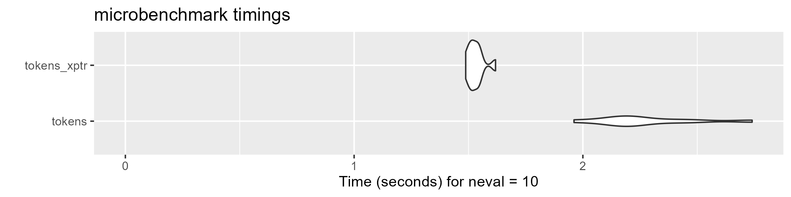
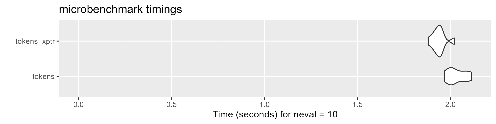
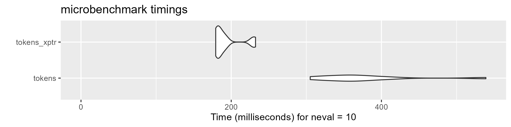
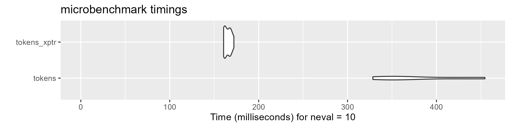
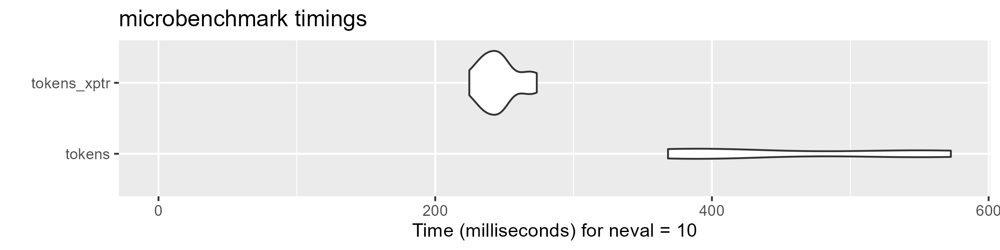
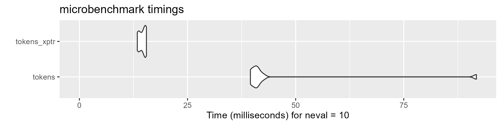
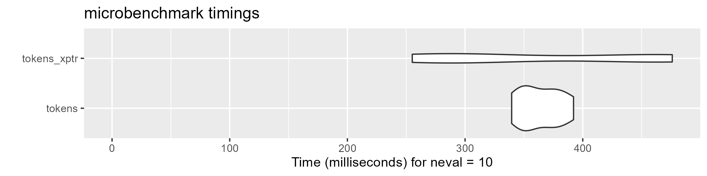
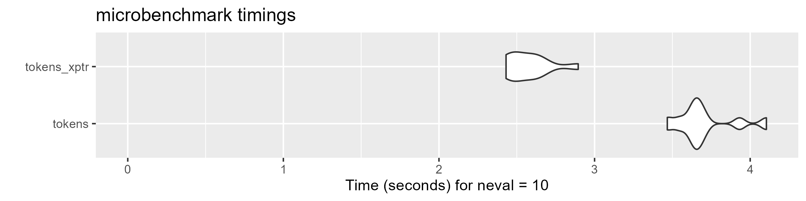

Performance improvements
Kohei Watanabe and Stefan Müller
Source:vignettes/pkgdown/benchmarks_xptr.Rmd
benchmarks_xptr.RmdOverview and benchmarking approach
quanteda version 4.0 can process textual data
significantly faster than its earlier versions thanks to the
tokens_xptr object and a new glob pattern matching
mechanism. More information on the features and advantages of the new
xptr object are available in a separate vignette.
How we performed the comparison: we compare the tokens
and tokens_xptr on a Windows laptop with AMD Ryzen 7 PRO
processor (8 cores). We used sentences from 10,000 English-language news
articles in this benchmarking.
We repeated the same operation using different versions of the same functions to get the distribution of execution time. The result shows that the execution time of many v4.0 functions is about half of their version 3.3 counterparts.
# remotes::install_github("quanteda/quanteda3")
library("quanteda")
library("ggplot2")
# create text corpus
corp <- corpus_reshape(data_corpus_guardian)
# tokenize corpus
toks <- tokens(corp, remove_punct = FALSE, remove_numbers = FALSE,
remove_symbols = FALSE)
# transform tokens object to tokens_xptr object
xtoks <- as.tokens_xptr(toks)
ndoc(xtoks) # the number of sentences
## [1] 200254
sum(ntoken(xtoks)) # the total number of tokens
## [1] 5322321Modifying tokens objects
as.tokens_xptr() is inserted before functions calls to
deep-copy the original object. This is only necessary to repeat the same
operation in benchmarking, so the performance advantage of the
tokens_xptr object is even greater in actual pipeline.
# generate n-grams
microbenchmark::microbenchmark(
tokens = tokens_ngrams(toks),
tokens_xptr = as.tokens_xptr(xtoks) |>
tokens_ngrams(),
times = 10
) |> autoplot(log = FALSE)
# lookup dictionary keywords
microbenchmark::microbenchmark(
tokens = tokens_lookup(toks, dictionary = data_dictionary_LSD2015),
tokens_xptr = as.tokens_xptr(xtoks) |>
tokens_lookup(dictionary = data_dictionary_LSD2015),
times = 10
) |> autoplot(log = FALSE)
# remove stop words
microbenchmark::microbenchmark(
tokens = tokens_remove(toks, pattern = stopwords("en"), padding = TRUE),
tokens_xptr = as.tokens_xptr(xtoks) |>
tokens_remove(pattern = stopwords("en"), padding = TRUE),
times = 10
) |> autoplot(log = FALSE)
# compound tokens
microbenchmark::microbenchmark(
tokens = tokens_compound(toks, pattern = "&", window = 1),
tokens_xptr = as.tokens_xptr(xtoks) |>
tokens_compound(pattern = "&", window = 1),
times = 10
) |> autoplot(log = FALSE)
# group sentences to articles
microbenchmark::microbenchmark(
tokens = tokens_group(toks),
tokens_xptr = tokens_group(xtoks),
times = 10
) |> autoplot(log = FALSE)
Combining tokens objects
Combining tokens objects using c() is also substantially
faster.
# get first 5000 documents
toks1 <- head(toks, 5000)
# get last 5000 documents
toks2 <- tail(toks, 5000)
# transform both objects to tokens_xptr objects
xtoks1 <- as.tokens_xptr(toks1)
xtoks2 <- as.tokens_xptr(toks2)
# combine tokens objects
microbenchmark::microbenchmark(
tokens = c(toks1, toks2),
tokens_xptr = c(xtoks1, xtoks2),
times = 10
) |> autoplot(log = FALSE)
Constructing a document-feature matrix
We also compare the speed of constructing a document-feature matrix (DFM) using tokens objects.
microbenchmark::microbenchmark(
tokens = dfm(toks),
tokens_xptr = dfm(xtoks),
times = 10
) |> autoplot(log = FALSE)
Simple pipeline: tokenising a corpus and creating a document-feature matrix
microbenchmark::microbenchmark(
tokens = tokens(corp) |>
tokens_remove(stopwords("en"), padding = TRUE) |>
dfm(remove_padding = TRUE),
tokens_xptr = tokens(corp, xptr = TRUE) |>
tokens_remove(stopwords("en"), padding = TRUE) |>
dfm(remove_padding = TRUE),
times = 10
) |> autoplot(log = FALSE)